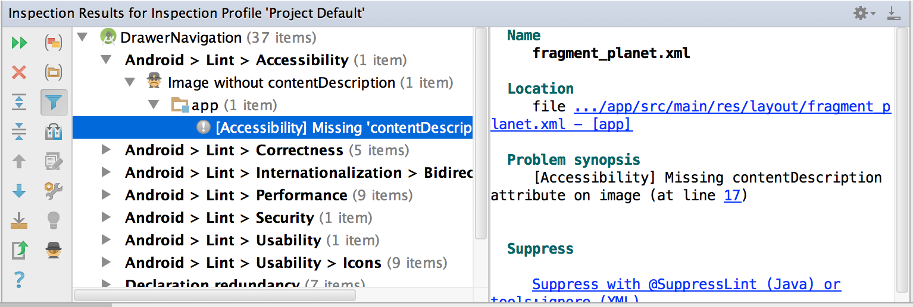

Tests des développeurs : analyse du code
Cette étape permet de remonter directement des problèmes d’accessibilité pendant la phase de développement et provoque des erreurs de build de l’application, ou divers warnings. Le développeur doit ainsi les corriger directement pour pouvoir builder son application et la faire fonctionner, ce qui la rend d’office plus accessible avant même de la faire passer par des tests manuels, ou par des outils d’analyse. De plus, cela évite les possibles régressions d’accessibilité.
Lint #
Le développeur peut en premier lieu utiliser l’outil Lint dans Android Studio, sur son application, afin de faire une première passe sur les problèmes d’accessibilités.
5 problèmes d’accessibilités peuvent être remontés grâce à Lint :
- ClickableViewAccessibility : Si une vue surcharge onTouchEvent ou utilise une surcharge onTouchListener , mais n’implémente pas performClick
- ContentDescription : les widgets non textuels ne portant aucune contentDescription
- KeyboardInaccessibleWidget : les widgets étant déclarés comme clickables mais non focusables.
- LabelFor : un EditText doit contenir soit un hint, soit la référence d’un label associé avec labelFor
- GetContentDescriptionOverride : surcharger getContentDescription peut poser des problèmes d’accès aux services d’accessibilité. Dans le cas où on a besoin de modifier la description, il faut plutôt faire appel à la fonction : setContentDescription
Exemple de rapport Lint sous Android Studio :
Tests automatisés : Espresso #
Espresso est un framework permettant de tester son UI sous Android. On peut alors y intégrer le framework ATF (Accessibility Test Framework), qui va ajouter une couche de tests concernant l’accessibilité.
Aucun test explicite n’a besoin d’être écrit. Une fois ATF intégré aux tests Expresso, les vérifications d’accessibilité se rajoutent automatiquement. ATF fonctionne cependant avec les ViewAction, c’est-à-dire qu’il va effectuer automatiquement la vérification d’accessibilité sur les interactions ViewAction mis en place dans les tests Espresso. De plus, pour activer les vérifications d’accessibilité, il faut faire appel à la fonction AccessibilityChecks.enable() dans la suite de tests.
Voici comment l’intégrer :
@Before
public static void enableAccessibilityChecks() {
AccessibilityChecks.enable();
}
companion object {
@BeforeClass @JvmStatic
fun enableAccessibilityChecks() {
AccessibilityChecks.enable()
}
}
C’est ainsi que, dans le cas où l’on réalise dans la suite de test un ViewAction.click() sur un bouton qui ne correspond pas à la taille requise pour un élément interactif, le test apparaitra en erreur jusqu’à ce que le problème d’accessibilité soit résolu.
Réaliser les tests automatisés d’accessibilité sur l’ensemble de l’écran #
L’automatisation du test d’accessibilité selon les ViewAction peut cependant devenir limitant. C’est pourquoi, on peut indiquer lors de l’activation de ATF, que l’on souhaite faire les validations depuis la vue racine. Ainsi, toutes les vues seront testées, sans besoin d’ajouter de ViewActions. Pour ce faire, il faut remplacer AccessibilityChecks.enable() par AccessibilityChecks.enable().setRunChecksFromRootView(true)
Loguer les erreurs d’accessibilité plutôt que de provoquer l'échec des tests #
Il est possible de loguer les erreurs d’accessibilité afin de les voir apparaitre dans le logcat d’Android Studio, plutôt que de provoquer l'échec des tests Espresso, même si cela n’est pas conseillé. Cela ne doit être utilisé que dans un cadre temporaire. Pour ce faire, il faut ajouter la fonction suivante : AccessibilityChecks.enable().setThrowExceptionForErrors(false)
Créer une whitelist #
Plutôt que d'afficher toutes les erreurs d’accessibilité dans le logcat, il est possible de créer une whitelist pour ne loguer que celles que l’on souhaite, tout en conservant les autres en erreur. Pour cela, il faut ajouter la fonction suivante :
AccessibilityChecks.enable().setRunChecksFromRootView(true).setSuppressingResultMatcher(matchesView(anyOf(withId(R.id.buttonPlus))))
Dans cet exemple, la vue ayant pour id buttonPlus ne sera pas indiquée en erreur en cas de problème d’accessibilité, mais sera affichée dans le logcat.
These images are licensed under a Creative Commons Share Alike 2.0 license. Photo credit: openexhibits